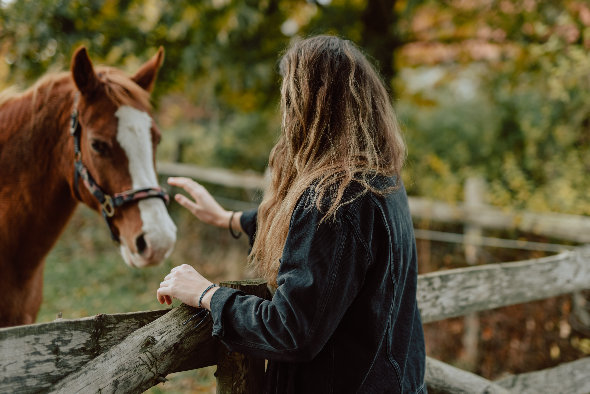

Design Challenge
The first step in the Mending Strides redesign process was defining the Design Challenge by utilizing the IDEO Human Centered Design Toolkit.
The first step in the Mending Strides redesign process was defining the Design Challenge by utilizing the IDEO Human Centered Design Toolkit.

After researching Mending Strides Ranch and talking with the Founder and Executive Director, I determined the key audiences and their corresponding goals.